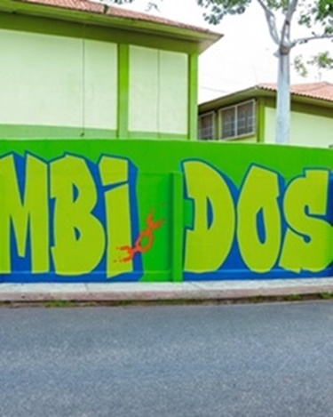
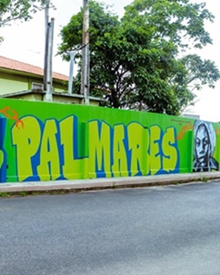
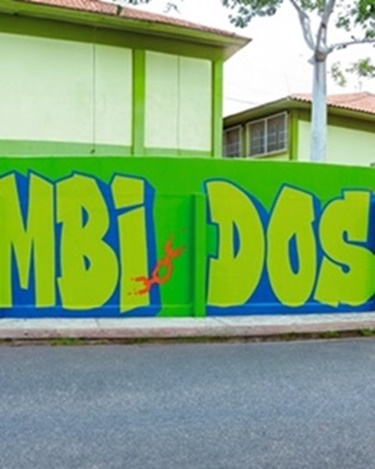
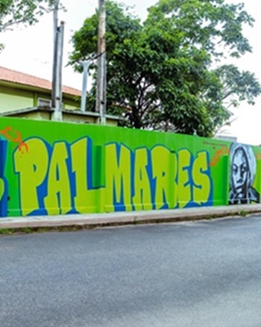

Nossa missão é proporcionar uma educação de qualidade, formando cidadãos críticos e conscientes.
 




A escola oferta as seguintes etapas de ensino
A escola Zumbi dos Palmares conta com mais de 1300 estudantes matriculados
nos três turnos de funcionamento. A escola oferta três turmas de quintos anos,
que são a última série do Ensino Fundamental Séries Iniciais. Além disso
tem mais de 550 estudantes matriculados desde o sexto ano até o nono,
entre matutino e vespertino, séries que compõem o Ensino Fundamental Séries Finais.
Por fim, a escola conta ainda com outros 550 estudantes matriculados no Ensino Médio,
desde a primeira série até a terceira série, no vespertino e no noturno.
A escola passou a contar, a partir de 2024 com três turmas de EJA
(Escolarização de Jovens e Adultos), voltados à estudantes que já completaram 18 anos,
mas ainda não concluiram a educação básica.
A maior parte do público da escola provém dos bairros de Balneário Carapebus, Bicanga, Carapebus, Cidade Continental Setor Oceania..
A escola reune o grupo de pais e responsáveis, ao menos uma vez por mês,
além de contar com um grupo de whatsapp para trocar informações com as famílias e um
canal no Instagram, para informar sobre provas, projetos, festas e demais atividades.
Endereço: Avenida Honolulu, Cidade Continental Setor Oceania, Serra - ES
Telefone: (27) 3051-2100
Email: escolazumbi@sedu.es.gov.br